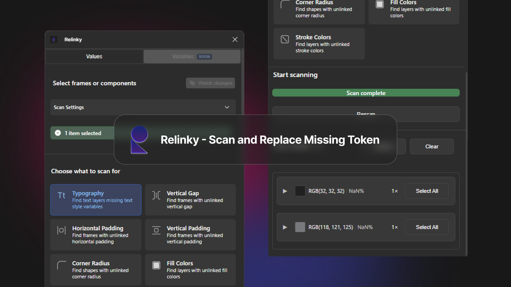
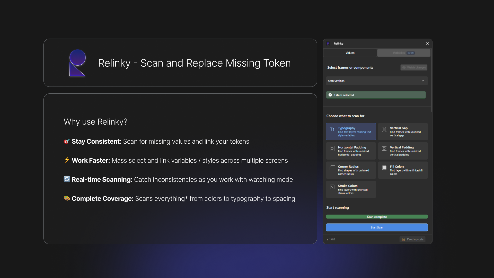
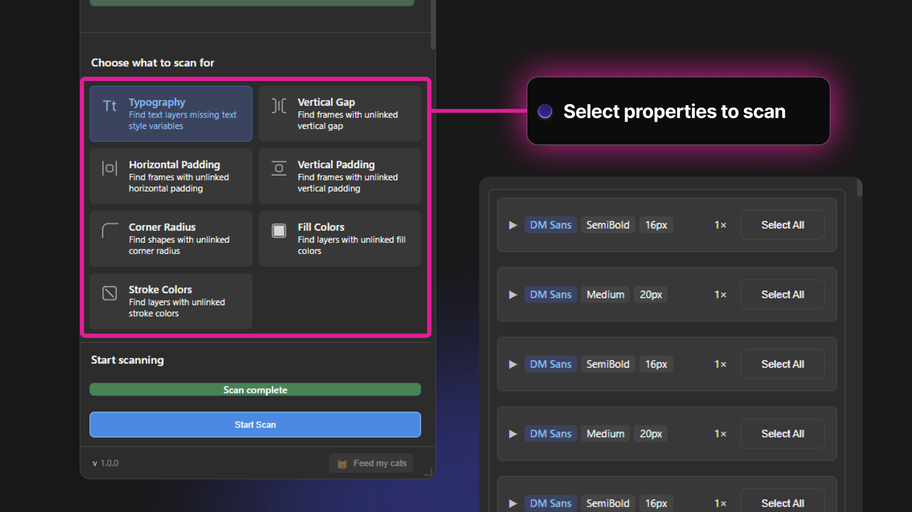
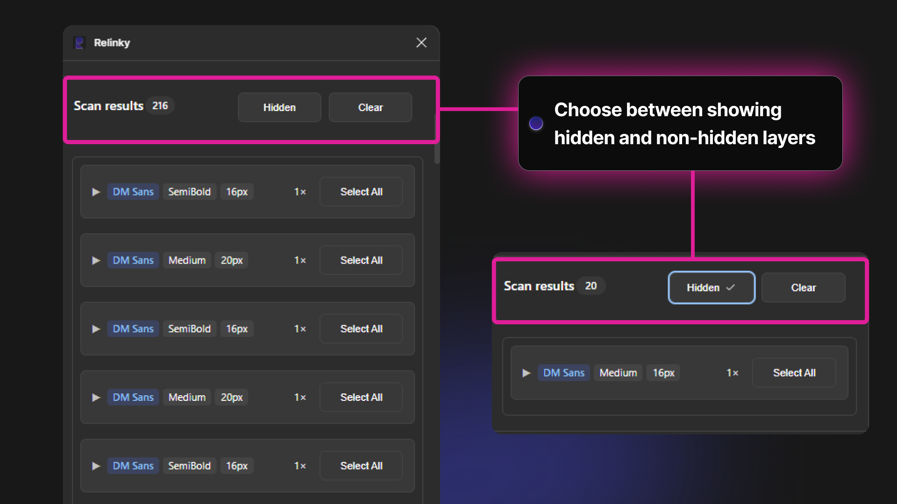

Relinky is a Figma plugin that automates the detection and management
of unlinked design tokens and variables, significantly reducing design debt
and improving team efficiency.

×
As a product designer working with large-scale design systems,
I came to realise a critical pain point during a handoff process across differeent design teams:
Internal Challenges
Unlinked values during explorations
Many unlinked values during explorations stage
Duplicating designs from different projects
Duplicating designs from different projects have unlinked values
External Challenges
Design systems in large organizations often face several challenges:
Design variables inconsistencies
Inconsistent use of design tokens across files and teams
Time-consuming manual changes of multiple design screens
Design to Development handover
Variables in hanoff screen might come from different libraries
Nested values within screens might be missed out
Relinky's Features

×
Scan for missing values with simple select and replace features
Color Detection
Identifies unlinked color values and strokes across design files
Typography Check
Scans for typography inconsistencies and unlinked text styles
Spacing Analysis
Detects spacing and layout variations from design system tokens
Scan for unlinked fill / Stroke Colors
×
Scan for unlinked fonts
×
Scan for unlinked spacing
×
Replacement features
Created a simple select all or select individual feature to allow quick variable replacement

×
Show or hide results to streamline workflow
In some cases, designers might not want to make a change to hidden layers,
this feature allows them to hide the results to streamline their workflow.

×
Comprehensive Variable Control
The plugin provides powerful tools for managing design variables:
Real-time library status monitoring
Batch selection and updating of variables
Visual preview of variable values
Direct library activation from results
Impact on Design Workflow
Based on real-world implementation, Relinky has demonstrated significant improvements in design team efficiency:
80% reduction in time spent on design system audits
95% improvement in design system compliance
Streamlined collaboration between designers and developers
Enhanced quality assurance for design deliverables
What's next for Relinky?
The plugin is continuously evolving with planned features including: